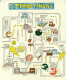
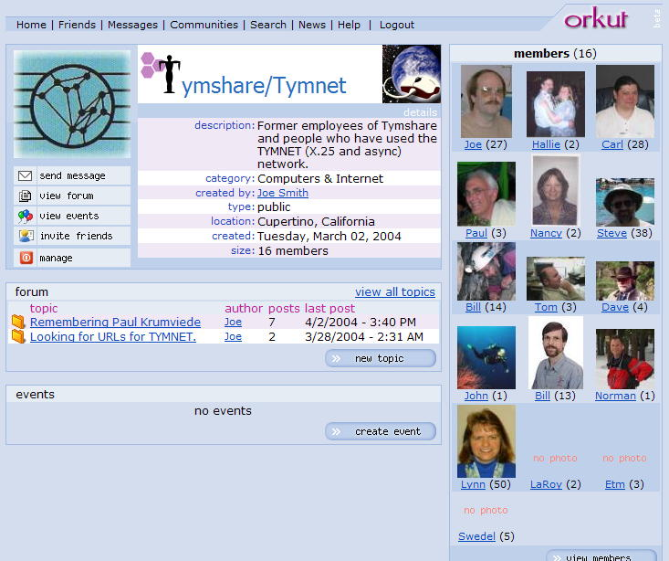

|  | > TYMNET-MAN < |
| Small: 628 x 759 | |
| Large: 1259 x 1519 |
Tymshare was purchased by McDonnell Douglas in 1984. The airplane company got rid of the Tymshare name, and renamed the Tymnet group to be McDonnell Douglas Network Systems Company. Tymshare's hardware people became McDonnell Douglas Field Service Company. The company also acquired Microdata (McDonnel Douglas Computer Systems Company) before deciding that diversifying into computers was a bad idea.
MDC sold the networking to British Telecom, who named it BT Tymnet for a while, then BTNA (BT North America). Then BT sold the networking group to MCI in return for forming a partnership of MCI + BT = Concert. BT was planning a merger with MCI when WorldCom made a better offer.
September 1998: merged company renamed to "MCI WorldCom".
June 2000: Company renamed to "WorldCom, Inc".
June 2002: The TYMNET X.25 Packet Network is scheduled to be shutdown.
Possible tie-in with the SC30M (36-bit computers) running Compuserve Classic.

{kind=link}
{kind=link}